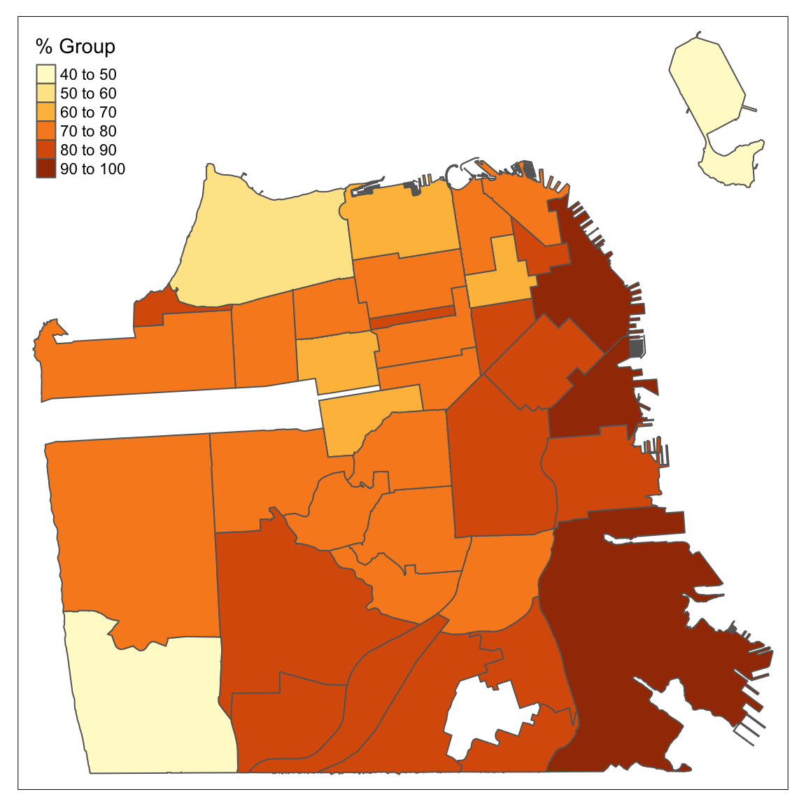
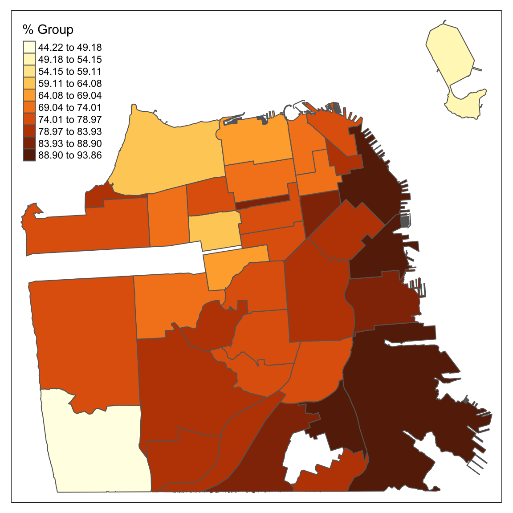
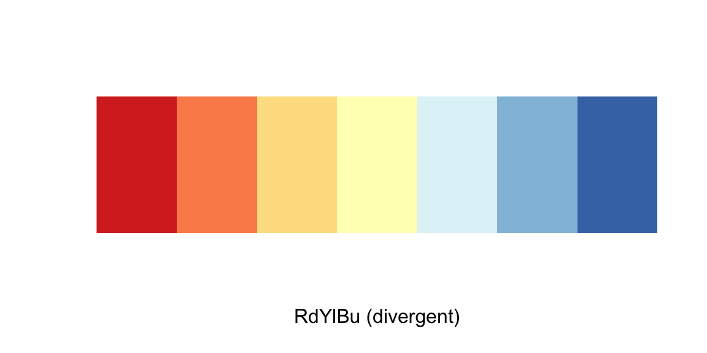
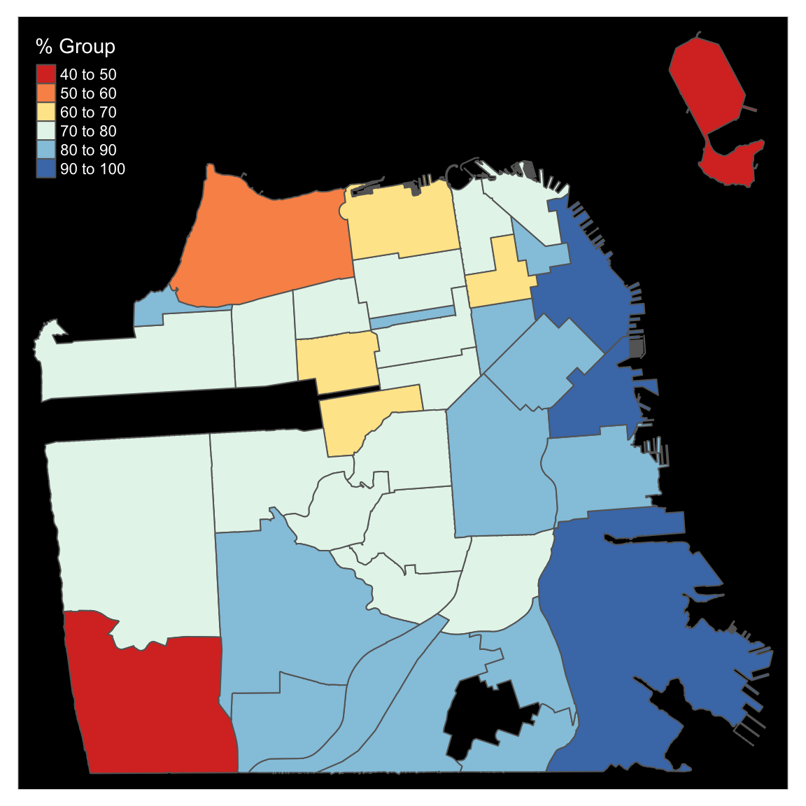
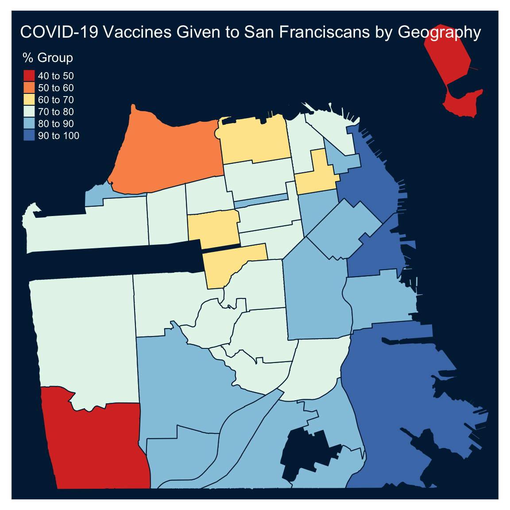
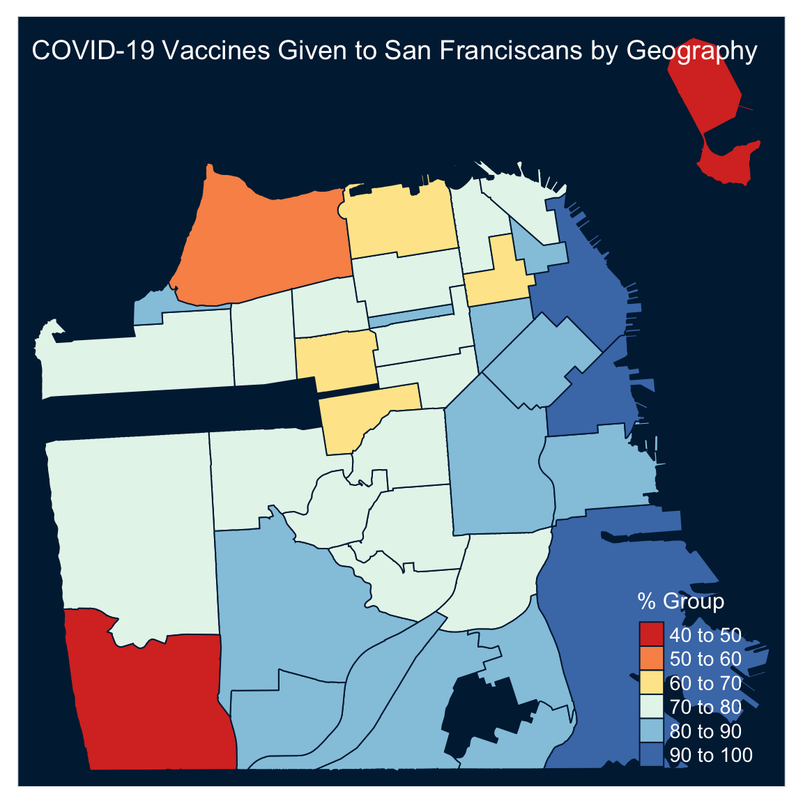
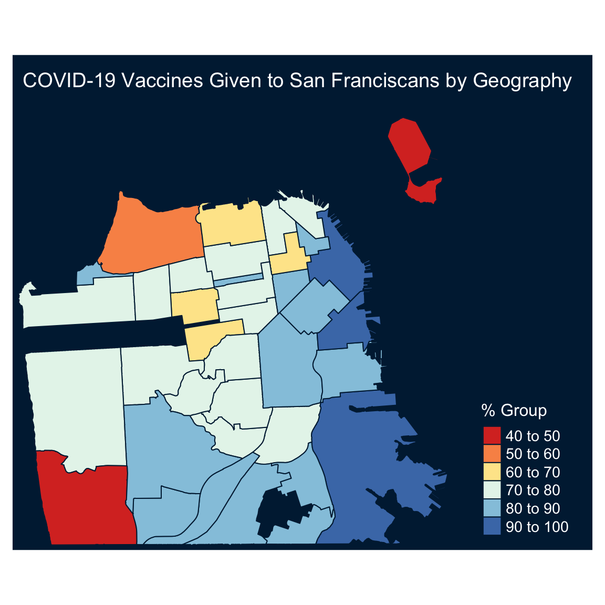

Introduction to Geospatial Visualization with the tmap package
I had super fun exploring the tmap package functionality while preparing a presentation about geospatial visualization for the Abuja R-Ladies/R Users meetup, so I decided to write a short tutorial about it.
The tmap package provides a set of functions and tools for creating thematic maps such as choropleths and bubble maps. The package follows the ggplot2 syntax style enabling users to add different layers to the map. By default, the plot output is static, but it also has an interactive mode providing a wrapper to the JavaScript leaflet library (similar to mapview and leaflet packages). This tutorial focuses on the basic functionality of the package covering:
- Plotting
sfobjects - Customize the plot colors
- Setting titles and legends
- Global options and attributes
Libraries
In this tutorial, we will use the following libraries:
- tmap - tools and functions for creating thematic maps
- sf - supports for
sfobjects - covid19sf - daily summary of COVID-19 cases and vaccination status in San Francisco
- dplyr - to manipulate and filter the data
- RColorBrewer - to set a color palettes for the plot
library(tmap)
library(sf)
library(covid19sf)
library(dplyr)
library(RColorBrewer)Data input
The tmap package supports objects from the sf, stars, sp, and raster packages. I generally find it easier to work with sf object as it is a data.frame with extra attributes (nested geometry data). Therefore, it is significantly easier and faster to manipulate sf objects with the use of dplyr or similar applications.
In the examples below, we will use the covid19sf_vaccine_geo dataset from the covid19sf package. This dataset represents the COVID-19 vaccinations given to SF residents by geographic region of their residential address. The dataset comes as an sf object, therefore, no additional reformatting is needed:
data(covid19sf_vaccine_geo)
head(covid19sf_vaccine_geo)## Simple feature collection with 6 features and 8 fields
## Geometry type: MULTIPOLYGON
## Dimension: XY
## Bounding box: xmin: -122.4773 ymin: 37.73155 xmax: -122.3843 ymax: 37.80602
## Geodetic CRS: WGS 84
## id area_type count_vaccinated_by_dph
## 1 Bernal Heights Analysis Neighborhood 5106
## 2 Financial District/South Beach Analysis Neighborhood 1841
## 3 Glen Park Analysis Neighborhood 573
## 4 Haight Ashbury Analysis Neighborhood 823
## 5 Hayes Valley Analysis Neighborhood 2401
## 6 Inner Sunset Analysis Neighborhood 1220
## count_vaccinated count_series_completed acs_population
## 1 21109 19781 25167
## 2 22782 20215 21537
## 3 7257 6804 8651
## 4 14360 13279 19275
## 5 16351 14930 19711
## 6 23414 21829 29539
## percent_pop_series_completed last_updated
## 1 0.7859896 2021-12-15 04:45:07
## 2 0.9386173 2021-12-15 04:45:09
## 3 0.7864987 2021-12-15 04:45:09
## 4 0.6889235 2021-12-15 04:45:09
## 5 0.7574451 2021-12-15 04:45:09
## 6 0.7389891 2021-12-15 04:45:09
## geometry
## 1 MULTIPOLYGON (((-122.4036 3...
## 2 MULTIPOLYGON (((-122.3875 3...
## 3 MULTIPOLYGON (((-122.4474 3...
## 4 MULTIPOLYGON (((-122.432 37...
## 5 MULTIPOLYGON (((-122.4208 3...
## 6 MULTIPOLYGON (((-122.4529 3...The dataset includes the following fields:
id- Area idarea_type- Area type, c(“Analysis Neighborhood”, “Summary”)count_vaccinated_by_dph- Count of residents in the given geographic region who has received at least one dose administered by DPHcount_vaccinated- Count of residents in the given geographic region who has received at least one dose regardless of who administered the vaccinecount_series_completed- Count of residents in the given geographic region who has completed a vaccine seriesacs_population- 2019 5-year American Community Survey population estimate for the given geographic region (all ages)percent_pop_series_completed- The total count of population that has completed a vaccine series by population estimate (acs_population)last_updated- Last update of the data in POSIXc format)geometry- The area polygon data
In the examples below, we will plot the percentage of San Francisco’s fully vaccinated population by neighborhood. The dataset contains both neighborhood and aggregated level data. Therefore, before starting, we will filter the data by the neighborhood level and remove the aggregated data:
df <- covid19sf_vaccine_geo %>%
filter(area_type == "Analysis Neighborhood") %>%
mutate(perc_complated = percent_pop_series_completed * 100)Note: We created the perc_complated variable, a transformation of the percent_pop_series_completed variable from decimal to percentage format.
Basic map
Before starting, following changes in the default options of the sf package from version 1.0-1, the default option is to use s2 spherical geometry when coordinates are ellipsoidal. That can cause some issues with the tmap package, therefore we will set this functionality as FALSE:
sf_use_s2(FALSE)We will start with a basic plot of the percentage of the vaccinated population in San Francisco. The tm_shape function specifies the shape object, and the tm_polygons function draws the polygons and fills the color based on the input variable:
tm_shape(df) +
tm_polygons(col = "perc_complated",
title = "% Group")
By default, the tm_polygons function bucket the continues variable into groups. In the case above, the percentage of vaccinated population, into groups of tens. The style and n arguments enable you to control the splitting or bucketing method (e.g., by fixed breaks, standard divination, quantile, log scale, etc.) and the number of groups, respectively. For example, let’s use the equal style and set the percentage groups into 10 equal buckets:
tm_shape(df) +
tm_polygons("perc_complated",
n = 10,
style = "equal",
title = "% Group") 
Color setting
Let’s now modify the plot’s colors. The palette argument on tm_polygons function enables you to define the map fill color palette. For example, we will use the RdYlBu from the RColorBrewer package:
display.brewer.pal(n=7, name = "RdYlBu")
tm_shape(df) +
tm_polygons("perc_complated",
palette = "RdYlBu",
title = "% Group") 
The palette argument supports R’s main color palettes packages, such as RColorBrewer and viridis. You can customize and modify the default palettes with the palette_explorer function, a Shiny app from the tmaptools package:
library(tmaptools)
palette_explorer()
The tm_layout function enables setting and modifying the plot’s main elements: title, margins, aspect ratio, colors, frame, legend, etc. In the following example, we will modify the previous plot and set the background to black using the bg.color argument. As the default text color is black, we will modify the legend title color to white with the attr.color argument:
tm_shape(df) +
tm_polygons("perc_complated",
palette = "RdYlBu",
title = "% Group") +
tm_layout(bg.color = "black",
attr.color = "white")
An alternative approach for setting the plot colors is to use a built-in color style. The tm_style function provides a predefined styles. That includes the following styles:
white- White background, commonly used colors (default)gray/grey- Grey background, useful to highlight sequential palettes (e.g. in choropleths)natural- Emulation of natural view: blue waters and green landbw- Greyscale, obviously useful for greyscale printingclassic- Classic styled maps (recommended)cobalt- Inspired by latex beamer style cobaltalbatross- Inspired by latex beamer style albatrossbeaver- Inspired by latex beamer style beaver
For example, let’s use the cobalt style:
tm_shape(df) +
tm_polygons("perc_complated",
palette = "RdYlBu",
title = "% Group") +
tm_style("cobalt")Titles and legends
After we set the color theme it is time to set the plot title and customize the legend with the tm_layout function. We will use the function title argument (not to be confused with the title argument of the tm_polygons function):
tm_shape(df) +
tm_polygons("perc_complated",
palette = "RdYlBu",
title = "% Group") +
tm_style("cobalt") +
tm_layout(title = "COVID-19 Vaccines Given to San Franciscans by Geography")
Note: You can customize the title position with the title.position argument, using a vector of two values (see ?title.position for more details).
It may make sense to move the plot’s legend to the bottom right. We will use the following legend arguments:
legend.position- to set the legend positionlegend.outside- if set toTRUE, will position the legend outside the plot marginlegend.title.size- set the legend title font sizelegend.text.size- set the legend font size
tm_shape(df) +
tm_polygons("perc_complated",
palette = "RdYlBu",
title = "% Group") +
tm_style("cobalt") +
tm_layout(title = "COVID-19 Vaccines Given to San Franciscans by Geography",
legend.position =c("right", "bottom"),
legend.outside = FALSE,
legend.title.size = 1.2,
legend.text.size = 0.9)
You can note that both the title and legend have some overlapping with the plot itself. We will use the inner.margins argument to modify the plot margins. This argument is a vector of four values specifying the bottom, left, top, and right margin:
tm_shape(df) +
tm_polygons("perc_complated",
palette = "RdYlBu",
title = "% Group") +
tm_style("cobalt") +
tm_layout(title = "COVID-19 Vaccines Given to San Franciscans by Geography",
legend.position =c("right", "bottom"),
legend.outside = FALSE,
legend.title.size = 1.2,
legend.text.size = 0.9,
inner.margins = c(0.01, 0.01, .12, .25))
Next, we will label the polygons with their names with the tm_text function. The text and size arguments define the labels variable and the font size, respectively:
tm_shape(df) +
tm_polygons("perc_complated",
palette = "RdYlBu",
title = "% Group") +
tm_style("cobalt") +
tm_text(text = "id",
size = 0.6) +
tm_layout(title = "COVID-19 Vaccines Given to San Franciscans by Geography",
legend.position =c("right", "bottom"),
legend.outside = FALSE,
legend.title.size = 1.2,
legend.text.size = 0.9,
inner.margins = c(0.01, 0.01, .12, .25))
Plot attributes
Last but not least, we will review the tmap package global options. The tmap_options function defines the default global attributes of the plot:
head(tmap_options(), 10)## $unit
## [1] "metric"
##
## $limits
## facets.plot facets.view
## 64 4
##
## $max.categories
## [1] 30
##
## $max.raster
## plot view
## 1e+06 1e+06
##
## $show.messages
## [1] TRUE
##
## $show.warnings
## [1] TRUE
##
## $output.format
## [1] "png"
##
## $output.size
## [1] 49
##
## $output.dpi
## [1] 300
##
## $output.dpi.animation
## [1] 100In total, there are 111 attributes:
names(tmap_options())## [1] "unit" "limits"
## [3] "max.categories" "max.raster"
## [5] "show.messages" "show.warnings"
## [7] "output.format" "output.size"
## [9] "output.dpi" "output.dpi.animation"
## [11] "check.and.fix" "title"
## [13] "scale" "title.size"
## [15] "bg.color" "aes.color"
## [17] "aes.palette" "attr.color"
## [19] "sepia.intensity" "saturation"
## [21] "frame" "frame.lwd"
## [23] "frame.double.line" "asp"
## [25] "outer.margins" "inner.margins"
## [27] "between.margin" "outer.bg.color"
## [29] "fontface" "fontfamily"
## [31] "compass.type" "earth.boundary"
## [33] "earth.boundary.color" "earth.boundary.lwd"
## [35] "earth.datum" "space.color"
## [37] "legend.show" "legend.only"
## [39] "legend.outside" "legend.outside.position"
## [41] "legend.outside.size" "legend.position"
## [43] "legend.stack" "legend.just"
## [45] "legend.width" "legend.height"
## [47] "legend.hist.height" "legend.hist.width"
## [49] "legend.title.color" "legend.title.size"
## [51] "legend.title.fontface" "legend.title.fontfamily"
## [53] "legend.text.color" "legend.text.size"
## [55] "legend.text.fontface" "legend.text.fontfamily"
## [57] "legend.hist.size" "legend.format"
## [59] "legend.frame" "legend.frame.lwd"
## [61] "legend.bg.color" "legend.bg.alpha"
## [63] "legend.hist.bg.color" "legend.hist.bg.alpha"
## [65] "title.snap.to.legend" "title.position"
## [67] "title.color" "title.fontface"
## [69] "title.fontfamily" "title.bg.color"
## [71] "title.bg.alpha" "panel.show"
## [73] "panel.labels" "panel.label.size"
## [75] "panel.label.color" "panel.label.fontface"
## [77] "panel.label.fontfamily" "panel.label.bg.color"
## [79] "panel.label.height" "panel.label.rot"
## [81] "main.title" "main.title.size"
## [83] "main.title.color" "main.title.fontface"
## [85] "main.title.fontfamily" "main.title.position"
## [87] "attr.outside" "attr.outside.position"
## [89] "attr.outside.size" "attr.position"
## [91] "attr.just" "basemaps"
## [93] "basemaps.alpha" "overlays"
## [95] "overlays.alpha" "qtm.scalebar"
## [97] "qtm.minimap" "qtm.mouse.coordinates"
## [99] "alpha" "colorNA"
## [101] "projection" "symbol.size.fixed"
## [103] "dot.size.fixed" "text.size.variable"
## [105] "bbox" "set.bounds"
## [107] "set.view" "set.zoom.limits"
## [109] "view.legend.position" "control.position"
## [111] "leaflet.options"For example, we can check the default plot background and text color as we set above with the bg.color and attr.color:
tmap_options()$bg.color## [1] "white"tmap_options()$attr.color## [1] "black"tmap_options()$style## NULLHere is a nice example, from the tmap_options documentation, of setting a black style option (for more examples, see ?tmap_options). First, we will define the key elements of the plot color schema as a list:
black_style <- structure(
list(
bg.color = "black",
aes.color = c(fill = "grey40", borders = "grey40",
symbols = "grey80", dots = "grey80",
lines = "white", text = "white",
na = "grey30", null = "grey15"),
aes.palette = list(seq = "plasma", div = "PiYG", cat = "Dark2"),
attr.color = "white",
panel.label.color = "white",
panel.label.bg.color = "grey40",
main.title.color = "white",
inner.margins = c(0.01, 0.01, .12, .25),
legend.text.size = 0.9,
legend.title.size = 1.2,
legend.outside = FALSE
),
style = "black"
)Using the tmap_options function, we will assign the new style to the global options:
tmap_options(black_style)You can confirm that the default option for bg.color is now black:
tmap_options()$bg.color## [1] "black"After we updated the global options, let’s replot the map:
tm_shape(df) +
tm_polygons("perc_complated",
palette = "RdYlBu",
title = "% Group") +
tm_text(text = "id",
size = 0.6) +
tm_layout(title = "COVID-19 Vaccines Given to San Franciscans by Geography",
legend.position =c("right", "bottom"))
Additional resources
Below are some additional resources and documentation:
- tmap package:
- Documentation - https://cran.r-project.org/web/packages/tmap/index.html
- Github - https://github.com/r-tmap/tmap
- covid19sf package:
- Documentation - https://ramikrispin.github.io/covid19sf/
- Gibhub - https://github.com/RamiKrispin/covid19sf
- Geospatial Visualization of the Covid19 Cases - https://ramikrispin.github.io/covid19sf/articles/geo.html
- sf package:
- Documentation - https://r-spatial.github.io/sf/
- Gibhub - https://github.com/r-spatial/sf